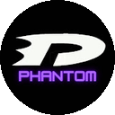

Phantom AwardsTerms of Service · Terma Perkhidmatan
Phantom Awards 2026 · Last updated / Dikemas kini: 4 November 2026- Free, fan-made and just for fun. No payments of any kind.
- One vote per category per Google account. No cheating or bots.
- Winners are decided by the community's votes.
1. About Phantom Awards
Phantom Awards is a free, fan-made game awards vote run by Jeeventhiran for the DePhantom தமிழ் YouTube community (Malaysia). It is not affiliated with, endorsed by or connected to The Game Awards, any game publisher, studio or platform. By using the site you agree to these Terms and to the Privacy Policy.
2. Who can take part
- You must be 13 or older. If you are 13 to 17, you need permission from a parent or guardian.
- Sign in with your own Google account and tick the consent box. Each account may vote once in each category and can change its vote until voting closes.
3. Fair play
- Do not use more than one account to vote, scripts, bots or other automated tools, or try to interfere with the site or its data.
- The site limits how fast votes can be saved. Votes that look fraudulent may be removed, and accounts that break these rules may be deleted.
4. How winners are decided
- Each winner is the nominee with the most valid votes in its category. Results stay hidden until the reveal time.
- The organizer chooses the categories, nominees and dates, may correct mistakes, remove fraudulent votes, and pause, change or end voting.
- A "Phantom's Pick" label shows the organizer's personal favourite. It is an opinion and does not change the results.
- Predictions and leaderboard points are for fun and have no cash value.
5. Free of charge
Phantom Awards is completely free. There are no fees, purchases, subscriptions, in-app payments or hidden costs, so there is nothing to refund. If a giveaway is ever announced, its prizes, eligibility and rules will be published separately with it.
6. Content, trademarks and credits
- Game names, logos, pictures and trailers belong to their respective owners. They are shown only to identify the nominees. If you own content and want it removed, email us and we will remove it promptly.
- The Phantom Awards and DePhantom names and logo belong to the organizer.
- Icons are based on Lucide (ISC licence). Fonts: Cinzel, Inter and Noto Sans Tamil (SIL Open Font Licence).
7. No warranty
The site is provided "as is". We try to keep it running and accurate but cannot guarantee it will always be available or error-free. Results are for entertainment and reflect only the people who voted.
8. Liability
To the extent the law allows, the organizer is not liable for any loss arising from using or being unable to use this free site. Nothing in these Terms limits rights you have under Malaysian consumer law.
9. Leaving and deleting your data
You can stop using the site at any time and delete your account and data yourself from the profile menu. See the Privacy Policy for details.
10. Changes and law
We may update these Terms; the date at the top shows the latest version. These Terms are governed by the laws of Malaysia.
11. Contact
Jeeventhiran (DePhantom தமிழ்) · jeeven1604@gmail.com
- Percuma, buatan peminat dan untuk suka-suka. Tiada sebarang bayaran.
- Satu undi bagi setiap kategori untuk setiap akaun Google. Tiada penipuan atau bot.
- Pemenang ditentukan oleh undian komuniti.
1. Mengenai Phantom Awards
Phantom Awards ialah undian anugerah permainan percuma buatan peminat yang dikendalikan oleh Jeeventhiran untuk komuniti YouTube DePhantom தமிழ் (Malaysia). Ia tidak bergabung dengan, disokong oleh atau berkaitan dengan The Game Awards, mana-mana penerbit, studio atau platform permainan. Dengan menggunakan laman web ini, anda bersetuju dengan Terma ini dan Dasar Privasi.
2. Siapa yang boleh menyertai
- Anda mesti berumur 13 tahun ke atas. Jika anda berumur 13 hingga 17 tahun, anda memerlukan kebenaran ibu bapa atau penjaga.
- Log masuk dengan akaun Google anda sendiri dan tanda kotak persetujuan. Setiap akaun boleh mengundi sekali dalam setiap kategori dan boleh menukar undi sehingga undian ditutup.
3. Permainan adil
- Jangan menggunakan lebih daripada satu akaun untuk mengundi, skrip, bot atau alat automatik lain, atau cuba mengganggu laman web atau datanya.
- Laman web mengehadkan kelajuan undi disimpan. Undi yang kelihatan palsu mungkin dibuang, dan akaun yang melanggar peraturan ini mungkin dipadam.
4. Cara pemenang ditentukan
- Setiap pemenang ialah calon dengan undi sah terbanyak dalam kategorinya. Keputusan disembunyikan sehingga masa pendedahan.
- Penganjur memilih kategori, calon dan tarikh, boleh membetulkan kesilapan, membuang undi palsu, serta menjeda, mengubah atau menamatkan undian.
- Label "Phantom's Pick" menunjukkan pilihan peribadi penganjur. Ia hanya pendapat dan tidak mengubah keputusan.
- Ramalan dan mata papan pendahulu adalah untuk suka-suka dan tiada nilai tunai.
5. Percuma
Phantom Awards adalah percuma sepenuhnya. Tiada yuran, pembelian, langganan, bayaran dalam aplikasi atau kos tersembunyi, jadi tiada apa-apa untuk dipulangkan. Jika cabutan hadiah diumumkan, hadiah, kelayakan dan peraturannya akan diterbitkan secara berasingan.
6. Kandungan, tanda dagangan dan kredit
- Nama permainan, logo, gambar dan treler adalah milik pemilik masing-masing. Ia dipaparkan hanya untuk mengenal pasti calon. Jika anda pemilik kandungan dan mahu ia dibuang, e-mel kami dan kami akan membuangnya dengan segera.
- Nama dan logo Phantom Awards serta DePhantom adalah milik penganjur.
- Ikon berdasarkan Lucide (lesen ISC). Fon: Cinzel, Inter dan Noto Sans Tamil (Lesen Fon Terbuka SIL).
7. Tiada jaminan
Laman web ini disediakan "seadanya". Kami berusaha memastikan ia berfungsi dan tepat, tetapi tidak dapat menjamin ia sentiasa tersedia atau bebas ralat. Keputusan adalah untuk hiburan dan hanya mewakili mereka yang mengundi.
8. Liabiliti
Setakat yang dibenarkan undang-undang, penganjur tidak bertanggungjawab atas sebarang kerugian akibat menggunakan atau tidak dapat menggunakan laman web percuma ini. Tiada apa-apa dalam Terma ini mengehadkan hak anda di bawah undang-undang pengguna Malaysia.
9. Berhenti dan memadam data anda
Anda boleh berhenti menggunakan laman web pada bila-bila masa dan memadam akaun serta data anda sendiri melalui menu profil. Lihat Dasar Privasi untuk butiran.
10. Perubahan dan undang-undang
Kami mungkin mengemas kini Terma ini; tarikh di bahagian atas menunjukkan versi terkini. Terma ini dikawal oleh undang-undang Malaysia.
11. Hubungi
Jeeventhiran (DePhantom தமிழ்) · jeeven1604@gmail.com